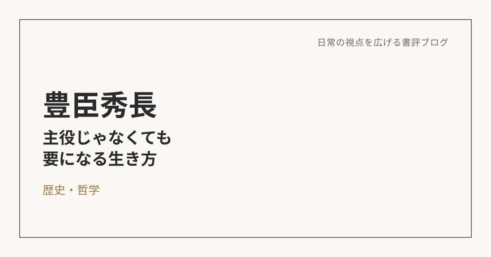

豊臣秀長――目立たなくても、いなくなったら困る人になりたい
この本について
堺屋太一による本作は、豊臣秀吉の異母弟であり、天下統一を実務面で支え続けた豊臣秀長の生涯を描いた歴史小説だ。派手な戦功や天下取りの物語ではなく、信長・秀吉という強烈なカリスマの傍らで、現場の兵糧や人員配置、家臣団の不満の調整といった実務を黙々と担い続けた人物にスポットを当てている。羽柴（豊臣）家側の視点を中心にしながらも、時代全体を俯瞰する解説を交えて進んでいくので、単なる一武将の伝記というより、組織そのものの物語として読める。
秀長というポジションに感じた共感
読みながら一番強く感じたのは、織田信長や豊臣秀吉のような天下人の言動が、現代でいう強烈なカリスマ経営者に重なって見える、ということだった。ビジョンは大きいが、細かい現場の事情や人の感情には無頓着になりがちなタイプだ。
その一方で、秀長は違った。兄である秀吉の無茶な指示を現実的なプランに落とし込み、現場の不満を吸い上げ、調整する役回りに徹していた。読んでいて、自分はどちらかというと、こういうタイプの方が性に合っているのかもしれないと感じた。派手に前へ出て手柄を誇るよりも、実務と調整によって物事を機能させていく方に、自然と惹かれるものがあった。
「攻めと守り」、両方揃って初めて機能する
物語の中で特に印象に残ったのは、秀長の死後、豊臣家が急速に衰退していったという史実だ。秀長が生きている間は、秀吉のカリスマ性という「光」と、秀長の実務・調整という「影」が組み合わさって、組織として機能していた。ところが秀長が亡くなると、その「影」の部分が失われ、秀吉の暴走を止める存在がいなくなってしまう。
組織には、大きな夢やビジョンを語る人と同じくらい、現実を整え、地に足をつけて調整する人の両方が必要なのだと、この史実は物語っている。攻める力だけでも、守る力だけでも、組織は長続きしない。
自分は、どちらの役回りでありたいか
この本を読んで、自分の中でも改めて考えさせられたのは、自分がどちらの役回りに向いているのか、ということだった。大きなビジョンを掲げて周囲を引っ張っていくタイプではなく、状況を整理し、無理のある要求を現実的な形に翻訳し、関係者の間を調整していくタイプ。そのことに、これまでよりもはっきりと自覚的になれた。
これは、役職や肩書きの話というより、自分がどんな形で周囲に貢献したいか、という資質の話に近い。派手に前へ出ることよりも、後ろで支えることに、自分は手応えを感じるタイプなのだと思う。
「役職」ではなく「役割」で見る、という視点
秀長が目指していたのは、天下人になることではなかった。彼が担っていたのは、あくまで「物事を機能させ続ける」という役割であり、その役割の重要性は、彼が亡くなったあとの豊臣家の衰退によって、皮肉にも証明されてしまった。
この視点は、自分のキャリアの考え方にも影響を与えてくれた。目指すべきなのは、特定の役職に就くことそのものではなく、社会や周囲との関わりの中で、自分がどうありたいかということなのだと思う。それは会社という組織に属するかどうかにも縛られない話で、フリーランスのような働き方であっても、根っこは変わらない軸になる気がしている。役職や肩書きは結果としてついてくるものであって、目的そのものではない。
これからの仕事との向き合い方
この本を読んで持ち帰りたいのは、「あの人がいると、物事がうまく回る」と思われる存在でありたい、という指針だ。それは会社の中の役職とは限らないし、目立つポジションでもないかもしれない。ただ、関わる場がどんな形であっても、周りを持続的に機能させられる存在でありたい、という軸は変わらない。
派手な実績や肩書きを追いかけるのではなく、実務や調整を通じて、静かに物事を支える。豊臣秀長という一人の武将の生き方から、自分なりのキャリアの北極星のようなものを、少しだけ見つけられた気がしている。
※本記事はNotionに書き溜めた読書メモをもとに、AIの編集サポートを受けて構成しています。